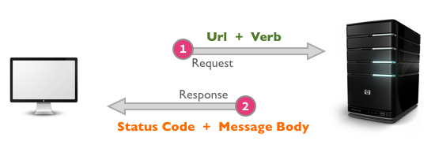

2. Basic Concepts

CENTRO | 2016
2.1 OSI Layer Model
Suppose we dinner tonight with the England Queen. "Wait until the
queen extends her hand to take it", they indicate us, "It's the
social protocol".

Network Protocols
Social protocols are rules that enable individuals and communities
to express social capabilities like discuss important things with
the English royalty.
In computer networks are a very similar concept.
Network Protocols
For example, suppose we are designing a very simple room chat.
We establish that for each message the data must be
separated with semicolon (;) and structured as follows:
receiver;"message";priority
If anyone send the data:
Tania;"Hello dear",HIGH
our chat does not know who deliver it.
Network Protocols
At the beginning of the computer networks (1980's) all companies defined
different ways to communicate their computers.
As the network become bigger and bigger, the world realized how
serious will be the incompatibility, and then, the concept of network
protocol was born.
Network Protocols
A network protocol is a list of rules that indicates how two or more computers
must transmit information.
These rules enable one computer to understand messages sent from
another and then act on those messages, defining: syntax and semantics.

http://www.library.louisville.edu/tilt/glossary/protocol2.htm
OSI Layers
The OSI (Open System Interconnection) Model is the standard conceptual model
of the today computer communications.
This model break down the network data in layers. In each layer have
different network protocols.
So we have different protocols for each layer.
OSI Layers
OSI Layers
- Physical Layer. Transmit bits (0, 1) without any structure through a physical media. Protocols: Ethernet, WiFi, Optical Fiber, etc
- Data Link Layer. Binary data form packages called frames. This layer controls the flow and delimits the frames. Protocols: MAC, LLC
- Network Layer. Routes the message, and encode into frames. Protocols: IP
- Transport Layer. Stablish point-to-point connections between two different computer processes. Concept of port is introduces. Protocols: TCP, UDP
- Session Layer. Put rules about sessions if are necessary.
- Presentation Layer. Handle data compression and data encode.
- Application Layer. Entry point for all the network services. Acts like a window for user purposes: transfer files (FTP), send mails (SMTP), transmitir datos web (HTTP).
2.2 TCP / UDP Protocol
Of all of previous protocols, these are two that you must should know.
Both are included in the Transport Layer and have the concept of port.
Main differences
| TCP | UDP |
|---|---|
| It is a connection-oriented protocol. | It is a message-oriented protocol. |
| Bidirectional | Unidirectional |
| Based on sockets | Based on datagrams |
| Reliable (always receives) | Unreliable |
| Guaranteed order | Packages could be delivered in different order than send. |
2.3 HTTP Protocol
HTTP stands for HyperText Transfer Protocol. It's an application
layer protocol, and is the FOUNDATION OF THE MODERN WEB.
As a web developer, we all must have a strong understanding of
this protocol.
HTTP
- HTTP it is based on a host-client architecture.
- All communication between a host and a client occurs, via a request/response pair.
- Is a stateless protocol.
- Uses TCP/IP protocols and the default port is 80.
- The current version of the protocol is HTTP/1.1.
- Has a security version: HTTPS
Requests
The communication in HTTP always begin in the client side with a
HTTP request message, which is serviced through a HTTP response message
in return for the host.
A host is called a server in that sense.

Requests - URL
A HTTP request message have two parts: an URL and a HTTP verb.
The URL (Uniform Resource Locator) tells from who and what resource the client
its wanting.

Requests - verbs
HTTP verbs indicate to the host the action that should be performed with the resource specified in the URL. The basic HTTP verbs are:
GET. Fetch an existing resource.POST. Create a new resource, extra payload usually specifies the data.PUT. Update an existing resource. The payload may contain the updated data for the resource.DELETE. Delete an existing resource.
PUT and DELETE are sometimes considered
specialized versions of the POST verb.
Responses
Once the send the HTTP request, the host (server) process the request
and send the response.
A response message from the server has two parts: the status code
and the payload message.
The HTTP spec defines certain number ranges for the status codes:
- 2xx Successful. This tells the client that the request was successfully processed. The most common code is 200 OK.
- 3xx Redirection.This requires the client to take additional action.
- 4xx Client Error.These codes are used when the server thinks that the client is at fault. The most popular code in this class is 404 Not Found.
- 5xx Server Error This class of codes are used to indicate a server failure while processing the request. The most commonly error code is 500 Internal Server Error.
Responses
Summary

2.4 HTML
With CSS and JavaScript it forms a triad of cornerstone technologies for the WorldWideWeb.
Anatomy of a website
HTML (structure) + CSS (style) + JavaScript (logic and behaviour)

HTML
HTML is the most elemental building block to program any web site.
All web sites that you can see through a web browser is written with
HTML.
It was created at the starts of 1990's by Tim Berners Lee, and currently
mantained by the W3C.

HTML
HTML stands for HyperText Markup Language.
It means that is a language made of hypertext and
marks. Both are used to indicates a browser the structure
of a web page.
HTML only gives structure (like the bones) to the web page, not
style, nor logic or behaviour.
Hypertext
The Hypertext allow embed external items (fonts, style, images,
video, scripts) indirectly through a reference of each item.
It is responsability of the render get the items with an extra effort
and combine all stuff to get the final view.
Tags and elements
HTML documents has a structure of nested HTML elements (hypertexted
content).
These are indicated in the document by marks, hereinafter referred
to as tags.
A tag is a code element (text) enclosed by angle brackets: < >.
Generally comes in pairs: "open tag" and "close tag", like:
An HTML element has two properties: attributes and content.
Hierarchy
There are tags that may enclose no content, like <img>.
The tags that enclose content defines a hierarchy, where the outside tag
has more hierarchy than the deeper.
When the renderer, parse the HTML document text, create an object in memory
called Document Object Model (DOM).

2.5 CSS
The Cascading Style Sheets (CSS) are files used for give the style to a website.
Anatomy of a website
HTML (structure) + CSS (style) + JavaScript (logic and behaviour)
Style Sheets
A style sheet consists of "style rules".
Each style rule consistsof a "selector" and "declarations" of
property-value pairs:
selector {
property: value;
property: value;
}
body {
color: yellow;
background-color: black;
}
CSS in HTML
There are three main ways to add CSS to an HTML:
- Style tag.
- Link tag.
- Inline styles (apply directly - VERY NASTY).
Selector
The selector is used to select which elements in the HTML page
will be given the styles inside the curly braces.
Types:
- By element (
img, div, body) - By id (
#) - By class (
.) - By property (
div[name="value"])
Naming conventions
Some rules to follow when making IDs and class names:
- Describe the content, not the presentation ("warning", not "redbox").
- Use all lowercase, and hyphens when needed for readability ("header-info", not "headerInfo").
- Use hyphens to show that a class or ID is part of something else. (e.g. "footer", "footer-copyright", and "footer-logo").